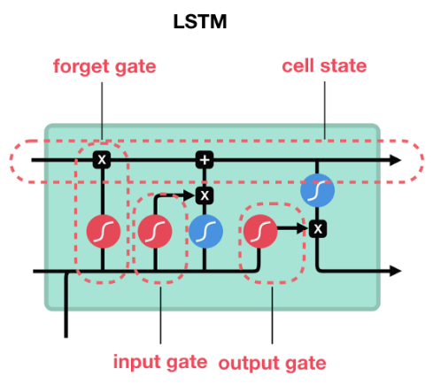

Interactive Image Segmentation
Label Man + CNN ==> Super Label Man
- We don’t need no bounding-boxes: Training object class detectors using only human verification.
- “GrabCut” — Interactive Foreground Extraction using Iterated Graph Cuts
- Deep Interactive Object Selection
- Annotating Object Instances with a Polygon-RNN
- Efficient Interactive Annotation of Segmentation Datasets with Polygon-RNN++
Problem:
Segment foreground from background
Given that:
Foureground in given bounding box.
Method:
Defind an Energy function \(E\),Use Graph Cut to minimum \(E\)
Done!
Energy:
Regional + Boundary $$ E(L)=\sum_{p}-D_{p}\left(L_{p}\right)+\sum_{p q \in N} w_{p q} \cdot \delta\left(L_{p} \neq L_{q}\right) $$
In this paper:
$$\mathbf{E}(\underline{\alpha}, \mathbf{k}, \underline{\theta}, \mathbf{z})=U(\underline{\alpha}, \mathbf{k}, \underline{\theta}, \mathbf{z})+V(\underline{\alpha}, \mathbf{z})$$
\(U\) evaluates the fit of the opacity distribution
\(V\) evaluates the smoothness of segmentation.
Max-Flow/Min-Cut
$$\mathbf{E}(\underline{\alpha}, \mathbf{k}, \underline{\theta}, \mathbf{z})=U(\underline{\alpha}, \mathbf{k}, \underline{\theta}, \mathbf{z})+V(\underline{\alpha}, \mathbf{z})$$
$$U(\underline{\alpha}, \mathbf{k}, \underline{\theta}, \mathbf{z})=\sum_{n} D\left(\alpha_{n}, k_{n}, \underline{\theta}, z_{n}\right)$$
$$D\left(\alpha_{n}, k_{n}, \underline{\theta}, z_{n}\right)=-\log p\left(z_{n} | \alpha_{n}, k_{n}, \underline{\theta}\right)-\log \pi\left(\alpha_{n}, k_{n}\right)$$
$$\begin{array}{c}{D\left(\alpha_{n}, k_{n}, \underline{\theta}, z_{n}\right)=-\log \pi\left(\alpha_{n}, k_{n}\right)+\frac{1}{2} \log \operatorname{det} \Sigma\left(\alpha_{n}, k_{n}\right)} \\ {\qquad+\frac{1}{2}\left[z_{n}-\mu\left(\alpha_{n}, k_{n}\right)\right]^{\top} \Sigma\left(\alpha_{n}, k_{n}\right)^{-1}\left[z_{n}-\mu\left(\alpha_{n}, k_{n}\right)\right]}\end{array}$$
$$\underline{\theta}=\{\pi(\alpha, k), \mu(\alpha, k), \Sigma(\alpha, k), \alpha=0,1, k=1 \ldots K\}$$
$$V(\underline{\alpha}, \mathbf{z})=\gamma \sum_{(m, n) \in \mathbf{C}}\left[\alpha_{n} \neq \alpha_{m}\right] \exp -\beta\left\|z_{m}-z_{n}\right\|^{2}$$
- \(\underline{\theta}\):histogram model θ
- \([\phi]\): Binary function
- \(\operatorname{dis}(\cdot)\): Euclidean distance of neighbouring
- \( \mathbf{C}\): neighboring pixels
- \(p(\cdot)\):Gaussian probability distribution,
- \(\pi(\cdot):\)mixture weighting coefficients
Gaussian Mixture Model：
A probabilistic model for representing normally distributed subpopulations within an overall population. $$\begin{aligned} p(\vec{x}) &=\sum_{i=1}^{K} \phi_{i} \mathcal{N}\left(\vec{x} | \vec{\mu}_{i}, \Sigma_{i}\right) \\ \mathcal{N}\left(\vec{x} | \vec{\mu}_{i}, \Sigma_{i}\right) &=\frac{1}{\sqrt{(2 \pi)^{K}\left|\Sigma_{i}\right|}} \exp \left(-\frac{1}{2}\left(\vec{x}-\vec{\mu}_{i}\right)^{\mathrm{T}} \Sigma_{i}^{-1}\left(\vec{x}-\vec{\mu}_{i}\right)\right) \\ \sum_{i=1}^{K} \phi_{i} &=1 \end{aligned}$$
$$E(L)=\lambda \cdot R(L)+B(L)$$
$$R(L)=\sum_{p_{i j} \in \mathcal{P}} R_{p_{i j}}\left(L_{p_{i j}}\right)$$
$$R_{p_{i j}}\left(L_{p_{i j}}\right)=\left\{\begin{array}{ll}{-\log \left(q_{i j}\right),} & {\text { if } L_{p_{i j}}\text { in object}} \\ {-\log \left(1-q_{i j}\right),} & {\text { otherwise }}\end{array}\right.$$
$$B(L)=\sum_{\left\{p_{i j}, p_{m n}\right\} \in \mathcal{N}} B_{\left\{p_{i j}, p_{m n}\right\}} \cdot \delta\left(L_{p_{i j}}, L_{p_{m n}}\right)$$
$$B_{\left\{p_{i j}, p_{m n}\right\}} \propto \exp \left(-\frac{\left(I_{p_{i j}}-I_{p_{m n}}\right)^{2}}{2 \sigma^{2}}\right) \cdot \frac{1}{\operatorname{dist}\left(p_{i j}, p_{m n}\right)}$$
- \(\delta (\cdot) = 1\) if two pixels are in the same group
- \(\lambda\): balance parameter
- \(L\): segmentation result
- \(I\): image pixel data
- \(p_{ij}\): pixel at \(i\) row and \(j\) colume
- \(q_{ij}\): probability of pixel \(i,j\) being foreground. Softmax value from network.
- \(dist(\cdot)\): Gaussian distance



\begin{array}{l}{f_{t}=\sigma_{g}\left(W_{f} x_{t}+U_{f} h_{t-1}+b_{f}\right)} \\ {i_{t}=\sigma_{g}\left(W_{i} x_{t}+U_{i} h_{t-1}+b_{i}\right)} \\ {o_{t}=\sigma_{g}\left(W_{o} x_{t}+U_{o} h_{t-1}+b_{o}\right)} \\ {c_{t}=f_{t} \circ c_{t-1}+i_{t} \circ \sigma_{c}\left(W_{c} x_{t}+U_{c} h_{t-1}+b_{c}\right)} \\ {h_{t}=o_{t} \circ \sigma_{h}\left(c_{t}\right)}\end{array}
- \(x_{t} \in \mathbb{R}^{d}\):input vector to the LSTM unit
- \(f_{t} \in \mathbb{R}^{h}\):forget gate activation
- \(i_{t} \in \mathbb{R}^{h}\):input gate activation
- \(o_{t} \in \mathbb{R}^{h}\):output gate activation
- \(h_{t} \in \mathbb{R}^{h}\):hidden state vector/output
- \(c_{t} \in \mathbb{R}^{h}\):cell state vector
- \(W \in \mathbb{R}^{h\times d}, U \in \mathbb{R}^{h\times h}, b \in \mathbb{R}^{h}\):weight
- \(\sigma_{g}\):sigmoid function.
- \(\sigma_{c}\):hyperbolic tangent function.
- \(\sigma_{h}\):hyperbolic tangent function.